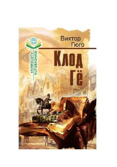

KGQashshoqlik tufayli jinoyatga qo'l urgan ishchining fojiali taqdiri haqidagi ibratli qissa.
Asarda qashshoqlik tufayli o'g'rilikka qo'l urgan Klod Gyo ismli ishchining qamoqxona hayoti va u yerdagi adolatsizliklarga qarshi kurashi tasvirlanadi. Muallif inson taqdiri va jamiyatdagi zolim tizimning shaxs ruhiyatiga ta'sirini chuqur tahlil qiladi.